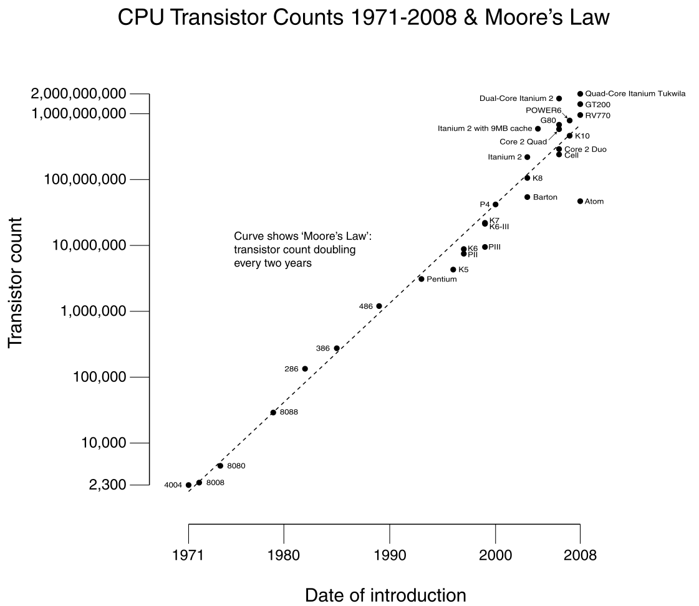

Tim Berners-Lee
Webben grundades, framför allt, av en person. Denne man heter Tim Berners-Lee. Eller Sir Tomothy John “Tim” Berners-Lee, om man ska säga hela hans namn. Tim är en brittisk tekniker och är mest känd för att ha grundat World Wide Web (WWW). När han började verka i forsknings institutet CERN.
På CERN så kommer det och går många forskare och då är det viktigt att dokumentera sina framgångar inom sina områden så att nästa forskare skulle kunna fortsätta där man själv slutade. Men innan Tims program skrevs så dokumenterade man alla sina upptäkter på papper och arkiverade sedan dom i fysiska ark. Till en början så kanske denna metod inte var så dålig. Men ju längre man forskar desto fler dokument blir det. Och man bestämde sig för att det tar alldeles för lång tid att hitta de dokument som tidigare forskare har arkiverat. Så då fick Tim i uppgift att skapa ett program som skulle kunna hålla reda på alla dokument. Programmet skulle kunna arkivera och ta fram de dokument man vill komma åt. Det här gjorde han när han började verka på CERN år 1980.
År 1989 bestämde sig Tim för att expandera sitt program. Han hade en vision om att kunna länka olika webbsidor med hypertext och länkar, på samma sätt som man kunde länka olika dokument. Men han ville kunna göra det globalt. Han var då tvungen att skapa ett protokoll som skulle sätta en standard på hur hemsidor skulle kodas och på vilket sätt alla hemsidors adresser skulle skrivas.
Moore's lag
Denna lag är uppkallad efter Intels grundare, Gordon E. Moore. Moore’s lag säger att datorers kraft och hastighet kommer att fördubblas efter varanat år. Från början trodde han att datorerna fördubblas i hastighet efter varje år. Men han insåg senare att datorerna inte utvecklaeds så snabbt så han ändrade sig och sa att datorernas kraft fördubblas efter två år. Han har dock med åren märkt att datorerna fördubblades i hastighet efter 18 månader.
Grafen
År 2004 upptäcktes ett nytt material i Storbritannien av Andre Giem och Konstantin Novoselov. Man försökte hitta ett nytt sätt att tillverka nanorör av kol men då upptäcktes det nya materialet grafen. Grafen är uppbyggt av endast kolatomer och har en bredd på 1 atom. För sin storlek så är grafen väldigt hållbart. I framtiden så tror man att grafen kommer att användas till att bygga processorer till datorer, skärmar tunna som papper och till och med kvant datorer. Det vill säga att datorn kan ta upp värden mellan 1 och 0.
bit och Byte
En dator jobbar genom att ta upp kommandon som ettor och nollor. D.v.s det binära talsystemet. Varje siffra (en etta eller en nolla) kallas för en bit. Ordet bit kommer från Binary Digit. Datorn tar upp alla bitar i olika kombinationer för att kunna visa olika tecken.
| 1 | 2 | 3 | 4 | 5 | 6 | 7 | 8 |
| 2 | 4 | 8 | 16 | 32 | 64 | 128 | 256 |
| 9 | 10 | 11 | 12 | 13 | 14 | 15 | 16 |
| 512 | 1024 | 2048 | 4096 | 8192 | 16384 | 32768 | 65536 |
Som man kan se i tabellerna ovan så kan 1 bit ge 2 kombinationer, 2 bitar ger 4 kombinationer etc. I det engelska alfabetet så finns det 26 bokstäver så det skulle räcka med 5 bitar för att få upp till 32 kombinationer. Men det finns både små och stora bokstäver. Och sen så har vi siffror och andra basic tecken. Så det bestämdes att vi skulle använda 8 bitar, eller en byte. Man tror att ordet byte kommer från “by eight”. Det är även det här talsystemet som heter ASCII.
ASCII täcker 256 olika tecken. Men om man kommer från ett land där man andra bokstäver än dom från det latinska alfabeter. Det vill säga t.ex. Kina, Ryssland etc. då man använder andra typer av tecken så räcker inte ASCII till. Då kan man använda sig av UNICODE. Syftet med UNICODE är att man ska kunna skriva alla världens tecken med ett talsystem. Detta talsystem använder sig av 16 bitar och har därmed 65 536 olika kombinationer.
Källor
- CERN
- Wikipedia
- Internets och WWWs Historia
- Wikipedia (Internet)
- Wikipedia (WWW)
- Tim Berners-Lee
- Wikipeida
- National Encyclopedin
- ARPANET
- Wikipedia
- National Encyclopedin